가격 묶음 (5강)
소비자잉여 · 순수/혼합 묶음 · Verizon 모형
핵심 개념
- 선형 가격 vs 비선형 가격: 4강은 개당 같은 가격(선형), 5강은 총액이 개수에 비례하지 않는 가격(비선형), 그 대표가 묶음 가격
- 묶음: 여러 상품을 한 가격에 팔아서, 따로라면 안 샀을 것까지 사게 함
- 소비자잉여(CS) = 가치(WTP) − 가격 → 손님은 잉여가 가장 큰 상품을 사고, 다 음수면 안 삼 (Verizon 모형의 규칙)
- 단일 가격의 한계: WTP가 높은 사람의 잉여를 못 가져감, 낮추면 이미 살 사람에게도 싸게 팔게 됨
- 순수 묶음: 묶음으로만 판매 / 혼합 묶음: 단품과 묶음을 둘 다 판매 (Verizon 7개 상품) / 크기별 가격: 몇 개를 고르든 개수로 가격 (넷플릭스 요금제)
- 묶음이 효과 있는 조건: 사람마다 WTP가 다르고, WTP가 음의 상관(한 사람은 A를, 다른 사람은 B를 높게 봄)일 때, 한계비용이 낮을 때 / 양의 상관이면 묶어도 이득 없음
- 모형에 IF·MAX·MATCH가 들어가서 함수가 꺾임 → 매끄러운 함수용 GRG는 안 되고 Evolutionary(무작위 탐색)
- 벌점: 현실에서 이상한 해(큰 묶음이 단품보다 쌀)를 목표에서 깎아 막는 방법, 제약으로 넣는 것과 비슷한 역할
교수님 설명
- 예: 세트 메뉴, 통신 결합, 데스크톱+모니터, MS Office (따로는 안 살 Access를 같이 사게)
- 수업에서 물병 경매: 가격을 내리며 손 드는 사람 수를 셈 → 그게 수요곡선, WTP − 가격 = 소비자잉여
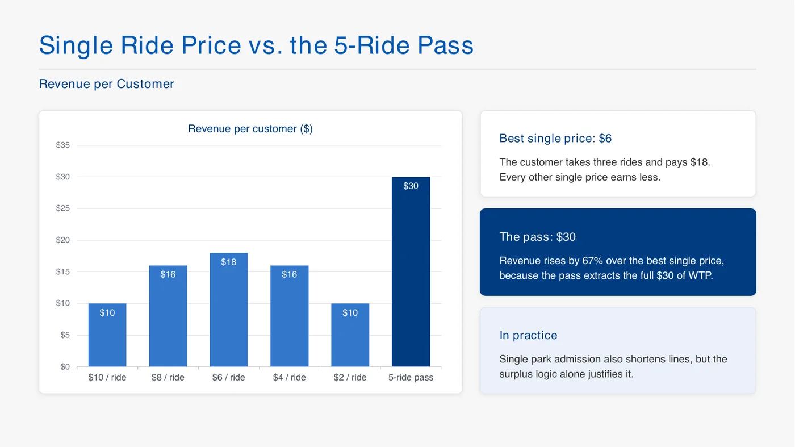
- "한 가격만 매기면 WTP가 더 높은 사람의 잉여를 못 가져감" → 놀이공원 패스, 디즈니 파크 호퍼
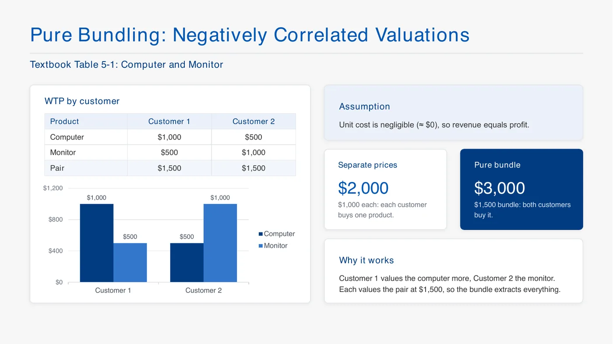
- 컴퓨터·모니터 (WTP가 엇갈림): 따로 $2,000, 묶음 $1,500이면 $3,000
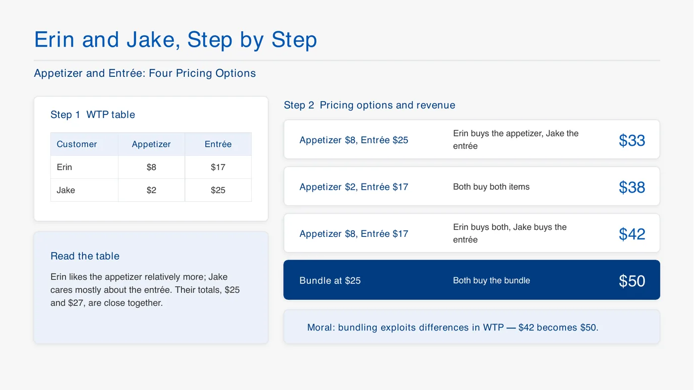
- Erin·Jake: 묶음 $25 → $50, "손님은 안 샀을 걸 사서 좋고, 가게는 더 벎"
- 학생 질문: 손님이 많으면 WTP를 어떻게 아나? → 시장 조사, 쿠폰·가격 변경으로 반응을 봄
- 크기별 가격(넷플릭스 요금제): 단계 사이 가격 차이로 위 단계를 고르게 유도, 한계비용이 낮아서 가능
Verizon 모형 (수업 파일 그대로)
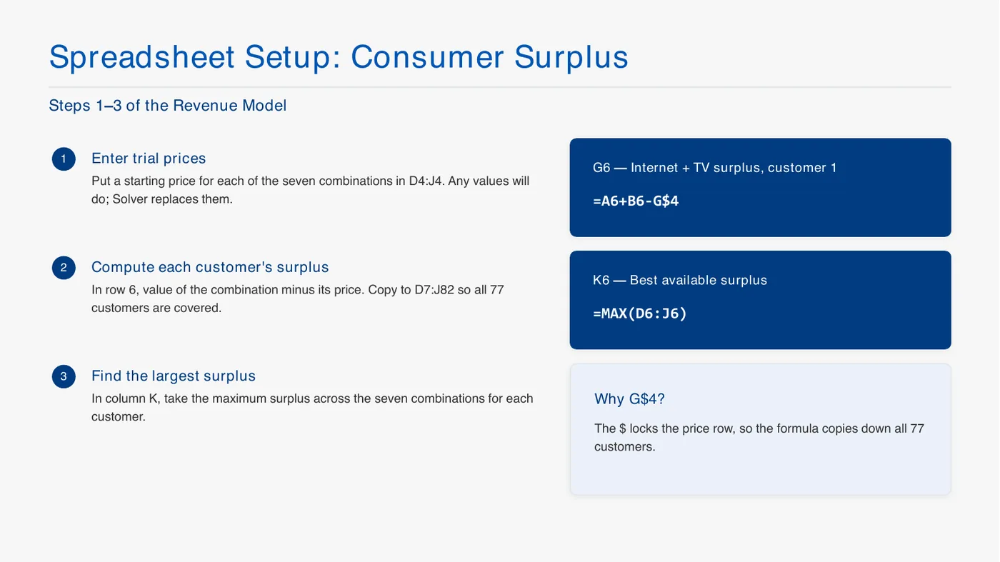
- 77명 × 인터넷·TV·휴대폰 월 WTP, 7개 상품 (1 인터넷, 2 TV, 3 휴대폰, 4 인터넷+TV, 5 인터넷+휴대폰, 6 TV+휴대폰, 7 셋 다)
- 손님은 잉여(WTP − 가격)가 가장 큰 상품을 삼, 다 음수면 안 삼
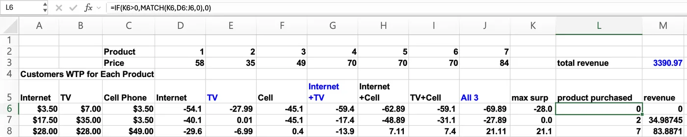
- D2:J2 = 상품 번호, D3:J3 = 가격 (처음엔 아무 값, 이게 결정변수)
- 잉여:
=A6-$D$3,=(A6+B6)-$G$3,=SUM(A6:C6)-$J$3… - 최대 잉여:
=MAX(D6:J6) - 산 상품 번호:
=IF(K6>0,MATCH(K6,D6:J6,0),0)→ 잉여가 양수면 몇 번째인지, 아니면 0 - 매출:
=IF(L6=0,0,HLOOKUP(L6,$D$2:$J$3,2,FALSE))→ 2행 번호에서 찾아 3행 가격 - 몇 명이 샀나:
=COUNTIF($L$6:$L$82,O10)
- 교수님 실수: 수식을 77명 끝까지 안 채워서 매출이 달라짐 → "오른쪽 아래 더블클릭해서 끝까지 채웠는지 먼저 확인"
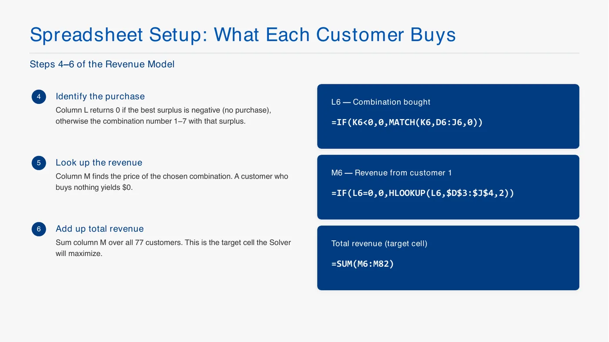
- 수업에서 학생들 매출이 달랐던 이유: MATCH 마지막 0을 빼먹음 → 비슷한 값을 골라버림
- 동점이면 엑셀이 아무거나 고름 → 총매출만 보니까 상관없음 (교수님)
- 잉여 = 0일 때 살지 말지는 마음대로 정해도 됨 (교수님)
- 한계비용이 상품마다 다르면 더 현실적이지만 지금은 단순하게
해 찾기와 벌점
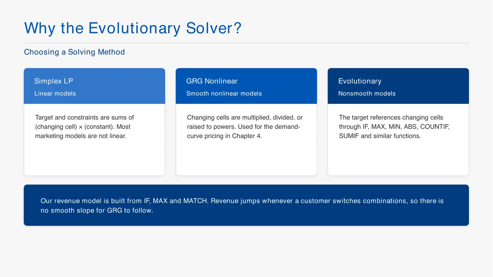
- 왜 Evolutionary: IF 조건 때문에 함수가 꺾여서 비선형 알고리즘이 안 먹힘
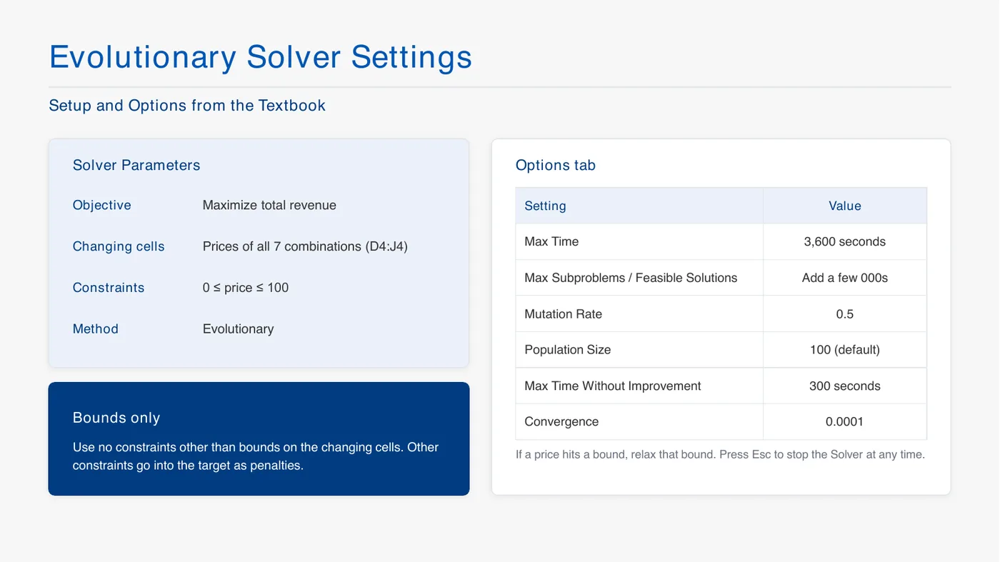
- 목표 M3 최대 / 변수 D3:J3 (여러 칸) / 제약 D3:J3 ≤ 100, ≥ 0 / Evolutionary
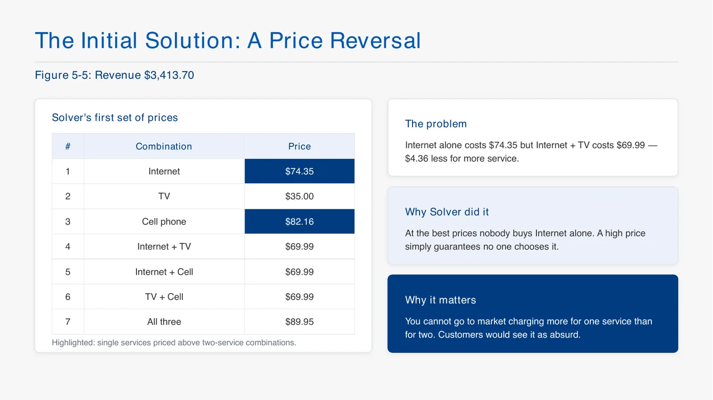
- 첫 결과의 문제: 큰 묶음이 단품보다 싼 경우 → 시장에 내놓으면 이상함
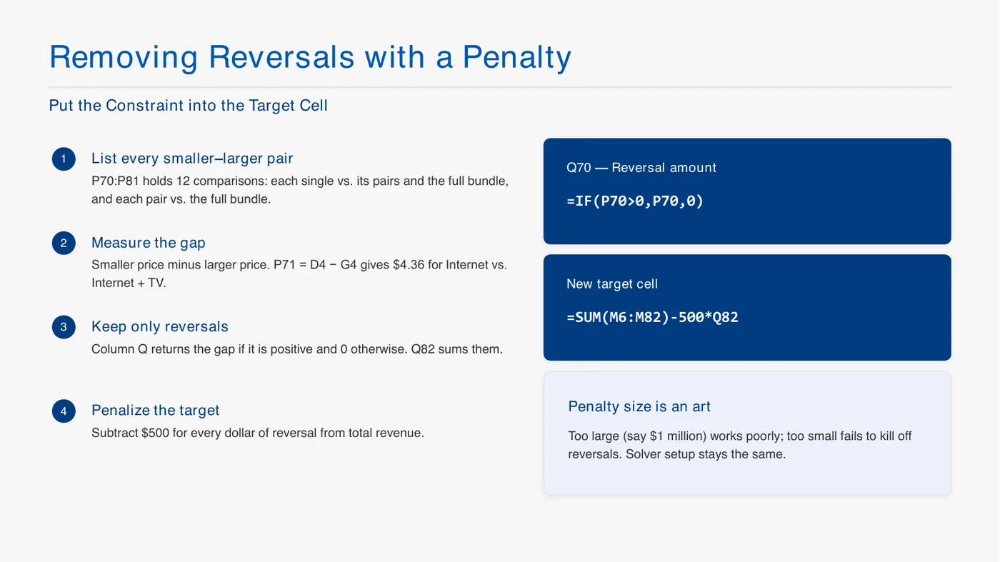
- 벌점: 작은 상품 − 큰 상품 12쌍, 양수(역전)일 때만 벌점으로 남김
- 새 목표:
=SUM(M6:M82)-500*Q82→ 역전 $1당 $500 감점
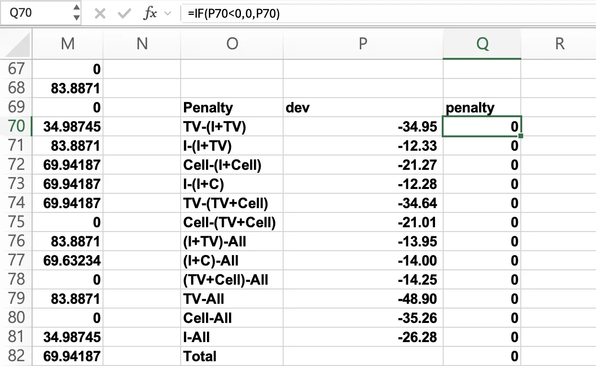
- P70
=E3-G3(TV − 인터넷+TV) …, Q70=IF(P70<0,0,P70), 합계 Q82=SUM(Q70:Q81) - 벌점 크기는 시행착오 ("1,000이든 10이든 해보고 결정")
- 학생 질문: 제약으로 넣으면? → 넣을 수는 있음
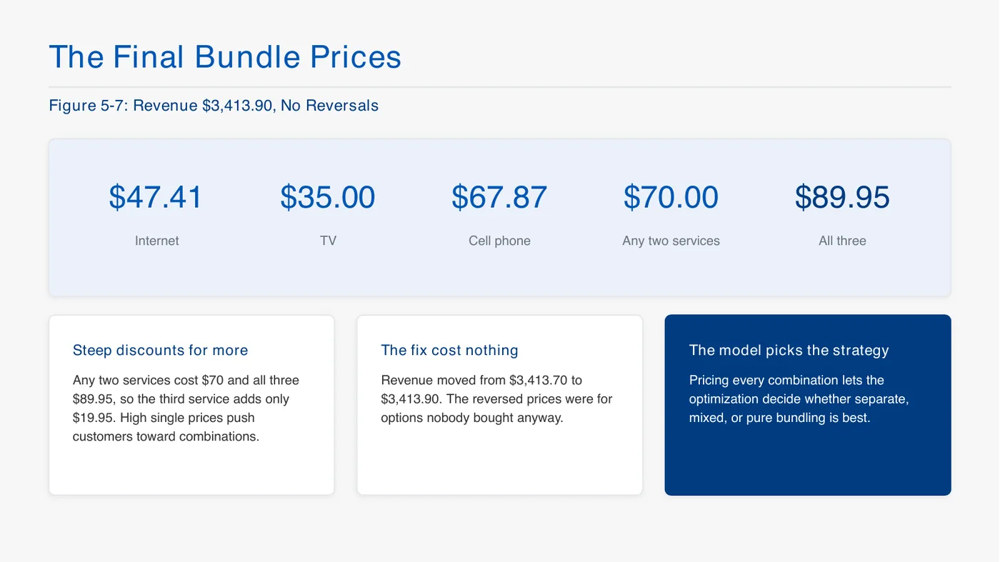
- 수업 파일 결과: 인터넷 $57.61, TV $34.99, 휴대폰 $48.62, 두 개 묶음 $69.6~69.9, 셋 다 $83.89 → 매출 $3,390.97, 벌점 0
- 구매: 안 삼 25, TV 17, 인터넷+TV 7, 인터넷+휴대폰 2, TV+휴대폰 1, 셋 다 25
- 수업 시연 결과는 벌점 넣고 약 $3,309, 안 삼 22명 (위 숫자는 수업 파일에 저장된 값)
- 숫자는 사람마다 조금 달라도 됨, 함수가 맞으면 OK